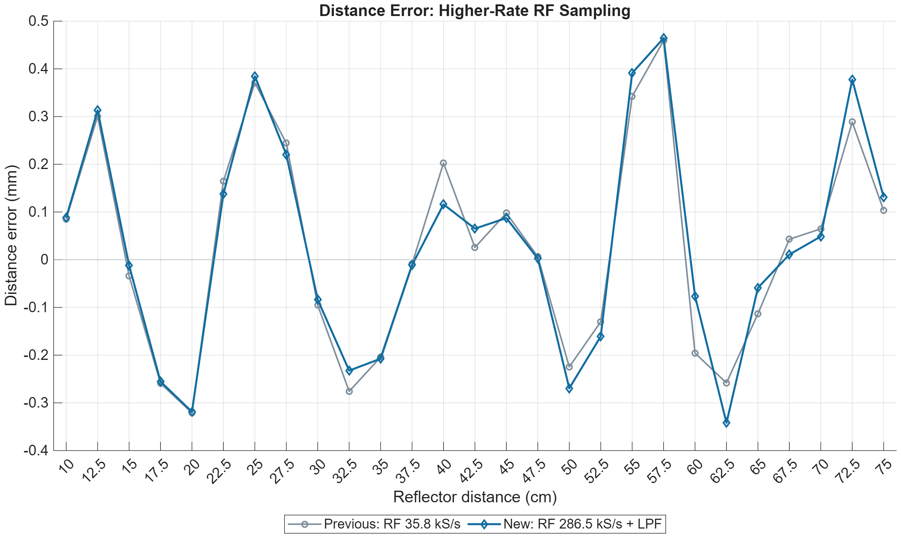

2026-10-23。修改并运行 MATLAB 模型；生产 FPGA、SOF、上位机均未修改。上一版完整脚本和结果备份为 before_nyquist_sampling_20261023.zip。
奈奎斯特频率 fN=fs/2；常规无载波混叠采样要求 fN 大于输入最高有效频率。当前近似正弦 RX 与参考的扫频范围为38–42 kHz，因此采样率应高于84 kS/s并留余量。上一版35.807 kS/s的奈奎斯特频率仅17.904 kHz，属于利用频带折叠的欠采样对照，不是普通无载波混叠采样。
本版选择原时间网格的 /4：286.458 kS/s，奈奎斯特频率143.229 kHz，既高于42 kHz输入，也高于两路相乘后最高84 kHz和频。相乘后再CIC3低通 /8，FFT输入回到35.807 kS/s；此时目标已经是25–2000 Hz拍频，不再是40 kHz载波。
| 位置 | 采样率 | 奈奎斯特频率 | 处理信号 |
|---|---|---|---|
| 旧版混频前 | 35.807 kS/s | 17.904 kHz | 38–42 kHz：载波折叠 |
| 新版混频前及乘法 | 286.458 kS/s | 143.229 kHz | 输入≤42 kHz；乘积和频≤84 kHz |
| 低通 /8 后的 FFT | 35.807 kS/s | 17.904 kHz | 目标25–2000 Hz拍频 |
新版流程：同源方波TX与正弦参考 → 理想换能器基波RX → 两路同步按286.458 kS/s取样（原网格 /4）→ 相乘 → CIC3低通 /8 → 672点去均值 → Kaiser4 → 补352零 → 1024 FFT → 25–2000 Hz搜峰 → 同款Q16对数插值 → 距离。
保持40 kHz中心、4 kHz带宽、20 ms发射、1 ms接收延迟、19 ms接收窗口、幅度0.25、343 m/s声速、理想16位ADC、672点Kaiser4、1024 FFT及原插值公式。两级降采样总比仍为32；有效输出时间仍为1.082909–19.822109 ms，未因提高RF采样率而缩短观测窗口。
19 ms内约5442对RF采样；本帧672个FFT有效点及启动丢弃实际需要5392对。可以分块相乘和滤波，无需把整段双路RF数组同时放进MCU RAM。混频运算多于上一版672次，但仍低于最初高速约21770次；FFT工作区仍按1024点预算。

| Case | Max |error| / mm | RMSE / mm | Valid peaks |
|---|---|---|---|
| Square TX, fundamental RX | 0.470153 | 0.225772 | 27 / 27 |
| Downsample first, then mix | 0.459172 | 0.218116 | 27 / 27 |
| RF /4, mix, CIC /8 | 0.464205 | 0.225520 | 27 / 27 |
恢复的是混频后的CIC3，抽取比改为8，DC增益512并归一化。76–84 kHz和频的幅度衰减为 -71.88 至 -51.43 dB；0–2000 Hz最大幅度下降约0.1318 dB，群延迟36.655微秒。计算包含真实因果启动、整数舍入和有限阻带残留，没有用理想砖墙滤波器或已知距离修正结果。
高RF采样率使两路基波与相乘和频不在混频阶段折叠；后续低通再降采样仍有有限阻带残留，不能称为所有频率绝对无混叠。该残留已保留在数值仿真中。新增 /8 CIC在75 cm完整帧与直接FIR卷积逐点一致。
主图仍是单回波、理想基波换能器模型，无噪声、多径、额外群延迟或ADC时钟误差。原始理想方波含无限多谐波，不能把42 kHz当成其完整带宽；这里采样的是换能器后的近似正弦RX和正弦参考。实物仍需在ADC前限制有效模拟带宽，残余谐波和干扰需另测。
此次只增加MATLAB仿真分支，原来的27组RTL基线、全部FFT功率和Q16插值结果继续逐点通过复现。没有重新烧录FPGA，没有MCU运行时间或实物抗混叠滤波器验证。原资源预算需要按新的286.458 kS/s混频与CIC /8重新核算。
27点结果 · 逐级采样率 · 检查与参数 · 75 cm高采样率两路样本与乘积 · MATLAB完整数据